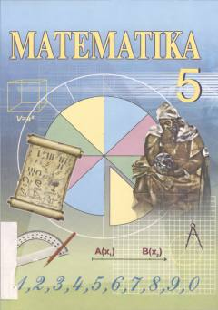

M5Aniq fanlarga ixtisoslashtirilgan maktablar uchun 5-sinf matematika darsligi.
Ushbu darslik aniq fanlarga ixtisoslashtirilgan umumiy o‘rta ta’lim maktablarining 5-sinf o‘quvchilari uchun mo‘ljallangan. Kitobda natural sonlar, arifmetik amallar va geometrik tushunchalar qiziqarli hamda mantiqiy masalalar yordamida tushuntirilgan.